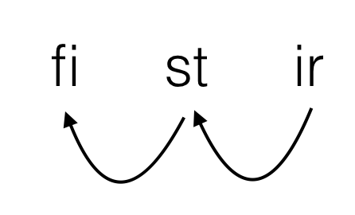

以下のは雑記・考察ログです。すでに絶滅した過去の仕様などが数多く含まれています。最新の仕様だけ知りたい人は設定一覧をお読みください。専門用語の一覧は用語集に掲載されています。インタプリタで実装されている追加仕様などについてはインタプリタの追加設定一覧（暫定）を参照ください。Twitterで出た質問はTogetterにまとめてあります（part1, part2, part3）。ソースコードの例としては非再帰フィボナッチと再帰フィボナッチとquicksortと開平があります。
2017/08/28: 呼び出し規約を確定させる スタックの掃除をするのは呼び出し側 いじって良いレジスタは4個 (f0 ~ f3) 引数は前からスタックに積む 戻り値は単純型ならレジスタ (f0) でやり取り
さて、呼び出し規約も決まったことだし色々書いていきますかね。とりあえずフィボナッチ書こう。スタックを管理するのは（ダイスロール）f5ですな。まずはCっぽく。
int fib(int a)
{
register int f0 = a;
register int f1 = 0;
register int f2 = 1;
register int f3;
while(f0) {
f0--;
f3 = f1 + f2;
f1 = f2;
f2 = f3;
}
f0 = f1;
return f0;
}
解説
| f0 | 5 | 4 | 4 | 3 | 3 | 2 | 2 | 1 | 1 | 0 | 0 | 5 |
| f1 | 0 | 0 | 1 | 1 | 1 | 1 | 2 | 2 | 3 | 3 | 5 | |
| f2 | 1 | 1 | 1 | 1 | 2 | 2 | 3 | 3 | 5 | 5 | 8 | |
| f3 | 1 | 2 | 3 | 5 | 8 |
x86風に書いてみる
MOV f0 [ESP+4]
MOV f1 0
MOV f2 1
a: EQU f0 0
J_C b ;フラグを見てジャンプ
ADD f0 -1
MOV f3 f1
ADD f3 f2
MOV f1 f2
MOV f2 f3
JMP a
b: MOV f0 f1
JMP [ESP]
ADD ESP 4
リパに翻訳
krz f0 [f5+4]
krz f1 0
krz f2 1
is: sie f0 0
J_C ka ; どうしよう
ata f0 -1
krz f3 f1
ata f3 f2
krz f1 f2
krz f2 f3
krz xx is
ka: krz f0 f1
krz xx [f5]
ata f5 4
というか、自明に「xxをいじる = ジャンプ」なので、ジャンプ命令を作ってそれをkrz xx abcdeと書いても良い設定にすればよい。ファイクレオネにはWPのおかげで既にワープ・瞬間移動・縮地法の類がありそうなので、それを流用するのが自然な気がする。
2で出てきた設定を（明示・暗黙共に）まとめる。
krz命令では代用できない（「フラグを見てkrzするか決める」という命令はないため）ので、別命令として作りkrz xx iskaもジャンプ命令に翻訳、という感じ？いや待て、『「フラグを見てkrzするか決める」という命令はない』など誰が言った？あってもええやん！（後世が投機実行の実装に苦しむ図）（でもオモロイやん採用）「フラグを見て代入するかどうか決める」命令をどうすべきか迷ったので、打ち合わせを行った。その結果、比較演算子系統のニーモニックが全部作り直しになった。
基本構文：
fi 第一オペランド 第二オペランド 比較表現 malkrz レジスタ 値
例：
fi f0 f1 lloler malkrz f2 f3
この構文は、上記の例に即するなら、Fi f0 es f1 le loler, mal krantairzarth f2'c f3'i. 「f0がf1よりも大きいならば、f3をf2にコピーする」というリパライン語表現にちょうど対応する。
もちろん、実際の処理としては、【fi ~ lloler命令は「第一オペランドが第二オペランドよりも大きいならばフラグを立てる」命令であり、malkrz命令が「フラグが立っているときにのみ第一オペランドに第二オペランドの値を代入する」命令である】ということであり、自然なリパライン語として読めるかどうかということは正しいアセンブリ言語になるかどうかとは当然別物である。
その証拠に、リパライン語では上記の文をFi f0 es f1 le loler, krantairzarth f2'c f3'i.というふうにmalという語を抜かして表現しても意味は変わらないが、
fi f0 f1 lloler krz f2 f3
は当然「f0がf1よりも大きいならばフラグを立てる。さてそれはともかくf3をf2にコピーする」という別の意味の命令群になる。リパラオネ人がこの仕様に苦しむのは、まるで現世でC系統の言語を習い始めた人がif(a = 0)とかif(a == 0||1)とか書いてしまうようなものである。
ということで、4.に基づき前述のフィボナッチを修正していこう。
krz f0 [f5+4]
krz f1 0
krz f2 1
is: fi f0 0 cloler ; ce loler
malkrz xx ka
ata f0 -1
krz f3 f1
ata f3 f2
krz f1 f2
krz f2 f3
krz xx is
ka: krz f0 f1
krz xx [f5]
ata f5 4
よし、これで初めての関数である。やったー。
しかし、clolerがやっぱりちょっと長い気がするなぁ（他が短すぎるだけともいう）
さて、じゃあ再帰フィボナッチも実装しましょうかね。まずはC
int fib2(int a)
{
register int f0 = a;
register int f1;
register int f2;
if(f0 < 2) {
goto fin;
}
f1 = f0;
f1--;
f0 = fib2(f1);
f2 = f0;
f1--;
f0 = fib2(f1);
f2 += f0;
f0 = f2;
fin:
return f0;
}
まずはx86もどき混じりで翻訳。
fib2: krz f0 [f5+4]
fi f0 2 xyloler
malkrz xx iska
krz f1 f0
ata f1 -1
PUSH f1
CALL fib2
POP f1 ;関数呼び出しでf1が破壊されるので修復
krz f2 f0
ata f1 -1
PUSH f2
PUSH f1
CALL fib2
POP
POP f2
ata f2 f0
krz f0 f2
iska: RET
次に、関数呼び出しとスタック操作について整理しよう。
スタックにiskaをプッシュする
ata f5 -4 ; f5を持ち上げて krz [f5] iska ; 積む
スタックをポップしてiskaに代入
krz iska [f5] ; スタックの値を代入 ata f5 4 ; f5を下げる
return f0;
krz xx [f5] ; リターンアドレスに飛んで ata f5 4 ; スタックからリターンアドレスを削除
f0 = func();
; えっと、 ata f5 -4 ; スタックにリターンアドレスを krz [f5] xx ; 積む krz xx func ; 関数のアドレスにジャンプ ; でいいのかな？ ; いいえ。積んだときのxxはkrz xx funcを指しています。よってこれでは無限ループします ; さてどうしよう。 ; 普通ならここで素直にCALLのニーモニックを作ればいいんだろうが、2003'd ferlesylの作者は全部をxxへの操作としたがる人だ ; そうだ、2つのkrzを1回で行う命令を作ればいいんだ ; 名前はqa stevypo krzの略でqskrzとでもすればいいか。 ; krz fi stの後にkrz st irをすることをqskrz fi st irと書けることにすればよい。 ; 実際処理としてよくありそうなやつだし。汎用性あるし採用していいでしょ ; ということで仕切り直し
f0 = func();
ata f5 -4 ; スタックを準備 qskrz [f5] xx func ; リターンアドレスを積んで、同一命令で関数のアドレスにジャンプ
CALLの実装書いてて気づいたけど、前にxxを1増やすって書いたの嘘やん。固定長でもないし1byteでもないもん。単純に「次の命令を指すところにxxが移動する」ですな。
さて、ここまでやったところで翻訳。
fib2: krz f0 [f5+4] fi f0 2 xyloler malkrz xx iska krz f1 f0 ata f1 -1 ata f5 -4 krz [f5] f1 ata f5 -4 qskrz [f5] xx fib2 krz f1 [f5] ata f5 4 krz f2 f0 ata f1 -1 ata f5 -4 krz [f5] f2 ata f5 -4 krz [f5] f1 ata f5 -4 qskrz [f5] xx fib2 krz f2 [f5+4] ata f5 8 ata f2 f0 krz f0 f2 iska: krz xx [f5] ata f5 4
まず、5に出てきた新規設定をまとめる。
この2番目と3番目を組み合わせると、なんと関数呼び出しが実行できるのである。
また、slackで出てきた課題について述べる。
待てよ？qskrz fi st irをCでいう「fi = st; st = ir;」ではなく「tmp = st; st = ir; fi = tmp;」であると再定義してやれば、上記のコードに一切の変更を与えずかつfiとirが同一であるときXCHGとして使えるのでは！？これは楽しいぞ。とりあえず命令名を変えなくては。Fafs氏に訊こう。
Fafs「qa'd stevypen snidost「二回移動」でqssでいかがでしょうか」
なるほど。まあ片方が移動で片方がコピーなのだが、fi = irのときはswapだしまあよかろう。
llolerについても反応を得た。「lloとでもすればいいのじゃろうなあ」とのこと。同意。
語順についても反応を得た。リパラオネ人は-'i -'cを好むらしい。となると再設計か？めんどい。とは言え、バート人は-'c -'iを好むそうだ。じゃあ「設計者はバート人だったので無意識のうちにV -'c -'iでデザインしていたが、リパラオネ人に-'i -'cの方が自然だと言われた。とはいえ既存のコードを全部修正するのは面倒だったので『ci指定擬似命令』をアセンブリに組み込んだ」という設定にしよう。
とりあえず、仕様がそれなりに変わったので書き直す。
非再帰フィボナッチ
::'c'i krz f0 [f5+4] krz f1 0 krz f2 1 is: fi f0 0 clo malkrz xx ka ata f0 -1 krz f3 f1 ata f3 f2 qss f1 f2 f3 krz xx is ka: krz f0 f1 krz xx [f5] ata f5 4
再帰フィボナッチ
::'c'i fib2: krz f0 [f5+4] fi f0 2 xylo malkrz xx iska krz f1 f0 ata f1 -1 ata f5 -4 krz [f5] f1 ata f5 -4 qss [f5] xx fib2 krz f1 [f5] ata f5 4 krz f2 f0 ata f1 -1 ata f5 -4 krz [f5] f2 ata f5 -4 krz [f5] f1 ata f5 -4 qss [f5] xx fib2 krz f2 [f5+4] ata f5 8 ata f2 f0 krz f0 f2 iska: krz xx [f5] ata f5 4
角かっこ記法・名前空間の衝突などまだ課題は残るが、とりあえずクイックソートでも書くか。まずはC
void quicksort(int* const a, int l, int r)
{
register int* const f0 = a;
register int f1 = l;
register int f2 = r;
register int f3;
if(f1 >= f2) {
goto fin;
}
f3 = f1;
f3++;
panqa:
if(f3 > r) {
goto fistir;
}
f2 = l;
f2 = f0[f2];
if(f0[f3] >= f2) {
goto iska;
}
f1++;
qss(f0[f3],f0[f1],f0[f3]);
iska:
f3++;
goto panqa;
fistir:
f2 = l;
qss(f0[f1],f0[f2],f0[f1]);
int p = f1;
quicksort(a,l,p-1);
quicksort(a,p+1,r);
fin:
return;
}
うわぁ（うわぁ）。とりあえずハンドコンパイルせねば
::'c'i ycax: krz f2 [f5+4] ; r krz f1 [f5+8] ; l krz f0 [f5+12] ; a fi f1 f2 xolo malkrz xx lus krz f3 f1 ata f3 1 panqa: fi f3 [f5+4] llo malkrz xx fistir krz f2 [f5+8] krz f2 [f0+f2] fi f2 [f0+f3] xtlo malkrz xx iska ata f1 1 qss [f0+f3] [f0+f1] [f0+f3] iska: ata f3 1 krz xx panqa fistir: krz f2 [f5+8] qss [f0+f1] [f0+f2] [f0+f1] ata f5 -4 krz [f5] f1 ; push p ata f5 -4 krz [f5] [f5+20] ; push a ata f5 -4 krz [f5] [f5+20] ; push l ata f5 -4 krz f1 [f5+12] ; f1 = p ata f1 -1 krz [f5] f1 ; push p-1 ata f5 -4 qss [f5] xx ycax ata f5 4 ; aはconstなのでスタックに残っているaを信用してよい krz f1 [f5+8] ; f1 = p ata f1 1 krz [f5] f1 ; push p+1 ata f5 -4 krz [f5] [f5+20] ; push r ata f5 -4 qss [f5] xx ycax lus: krz xx [f5] ata f5 4
疲れた。うーん、ataが多いのが気に入らないなぁ
書き忘れてた設定を思い出したので書いておく。nta fistir'c 即値'iはata fistir'c (-即値)'iに翻訳される。上記アセンブリでひたすらataを使っているのはそういう理由である。
また、符号付きと符号なしを明示的に区別しないほうが楽だよなーとも思っているが、問題は大小比較。今までのコードは正数と負数の比較をしていないのでどちらでもいいんだが、両方用意するとか決めるとかしないとなぁ。
あと、notequalを除いて比較命令が出揃ったので掲載しよう。
| fi ~ xtlo | fi * es * xut loler | 以下ならフラグを立てる |
| fi ~ xylo | fi * es * xy loler | 未満ならフラグを立てる |
| fi ~ clo | fi * es * ce loler | 同等ならフラグを立てる |
| fi ~ xolo | fi * es * xo loler | 以上ならフラグを立てる |
| fi ~ llo | fi * es * le loler | 超過ならフラグを立てる |
そしてこれをspreadsheetとサイトの両方に載せて来た。
あ、あとqssとmalkrzを足してこよう。
とりあえず、現状のニーモニック表を貼るとこうなる。
| 命令 | 語源 | x86 | 意味 |
| krz | krantairzarth | mov | 複製 |
| ata | atakes | add | 加算 |
| nta | ny atakes | sub | 減算 |
| stu | stusni | mul | 乗算 |
| kak | kakites | div | 除算 |
| ada | adal | and | ビット積 |
| ekc | ekcan | or | ビット和 |
| nac | nacis | not | ビット反転 |
| dal | daliual | xnor | ビットxnor |
| tod | tesnokon dusnij | shr | 右シフト |
| rod | restuton dusnij | shl | 左シフト |
| malkrz | mal krantairzarth | フラグが立っているときのみ複製する | |
| fi ~ xtlo | fi * es * xut loler | 以下ならフラグを立てる | |
| fi ~ xylo | fi * es * xy loler | 未満ならフラグを立てる | |
| fi ~ clo | fi * es * ce loler | 同等ならフラグを立てる | |
| fi ~ xolo | fi * es * xo loler | 以上ならフラグを立てる | |
| fi ~ llo | fi * es * le loler | 超過ならフラグを立てる | |
| fen | fav es niv e'i | nop |
何もしない |
| qss | qa'd stevypen snidost | 二重移動 (第1オペランドの値を第2オペランドに代入しつつ第2オペランドの古い値を第3オペランドに代入) |
さて、6.の最後で『ci指定擬似命令』なるものを導入した以上、基本的にニーモニックはリパライン語で-'i -'cの形となる動詞に由来すべきである。比較命令はともかく。
ということで、作業が終わった。除算は仕様すら決めていないので後で考えることにして、とりあえず新しくなった表を持ってこよう
| 命令 | 語源 | x86 | 意味 |
| krz | krantairzarth | mov | 複製 |
| ata | atakeses | add | 加算 |
| nta | ny atakeses | sub | 減算 |
| lat | latvaves | mul | 乗算 |
| (kak) | (kakites) | div | 除算 |
| ada | adales | and | ビット積 |
| ekc | ekcan | or | ビット和 |
| nac | nacises | not | ビット反転 |
| dal | daliuales | xnor | ビットxnor |
| dto | dusnij tesnokonj | shr | 右シフト |
| dro | dusnij restutonj | shl | 左シフト |
| malkrz | mal krantairzarth | フラグが立っているときのみ複製する | |
| fi ~ xtlo | fi * es * xut loler | 以下ならフラグを立てる | |
| fi ~ xylo | fi * es * xy loler | 未満ならフラグを立てる | |
| fi ~ clo | fi * es * ce loler | 同等ならフラグを立てる | |
| fi ~ xolo | fi * es * xo loler | 以上ならフラグを立てる | |
| fi ~ llo | fi * es * le loler | 超過ならフラグを立てる | |
| fen | fav es niv e'i | nop |
何もしない |
| inj | irzarst ileceonj | 二重移動 (第1オペランドの値を第2オペランドに代入しつつ第2オペランドの古い値を第3オペランドに代入) |
いぇーい。
いちいちソースコードを掲載するのも紙面を圧迫しそうなので、ファイルを分離して管理することにした。まずはもともと分離してあったquicksortから。qssをinjに書き換えて、フォントをjietodenにするのも忘れずに。
うーん、やはり角かっこを滅ぼしたいよなぁ
さて、次はフィボナッチを整理するか。とはいえ初期から色々変更点が溜まっているが大丈夫だろうか
未解決のを列挙していこう。さらに新規に見つかったやつも。
レジスタ一覧とニーモニック一覧が欲しいと言われたので、作った。
ソースコードのフォントを切り替えられる設定にした。あと、とりあえず非再帰フィボナッチと再帰フィボナッチのソースコードを独立ファイルとして公開。
nta fistir'c 即値'iはata fistir'c (-即値)'iに翻訳されるという設定を過去に作ったが、負値の書式がまだ決まらんのでアセンブリ言語としてはnta fistir'c 即値'iを許容することとした。ということでソースコードを編集だ。あと、めんどいので現状では負数のリテラルは使用しないことに決めた。
S.YやFafs falira sashimiと対談して進捗が出た。
| 旧構文 | 新構文 | 役割 |
ラベル名: | l' ラベル名（後ろから修飾）nll ラベル名（前から修飾） | ラベル名を定義する |
[レジスタ名] | レジスタ名@ | レジスタに入っている番地のメモリを表す。 |
[レジスタ名 + 定数] | レジスタ名 + 定数@ | レジスタに入っている番地に定数を足した番地のメモリを表す。 |
[レジスタ名 + レジスタ名] | レジスタ名 + レジスタ名@ | 2つのレジスタに入っている数値を足した番地のメモリを表す。 |
なお、ここで@で転写されている記号はリパライン語では「ioの合字記号」に対応する。Fafs falira sashimiの「理語的には非文的だけど、アセンブリとしてはできるだけ自然言語に近づいてていい感じな気はする」という発言が決定打となり、採用されることとなった。
ラベル名については、リパライン語に既にあるla lexを使うのが「エモい」とのことだったので採用することとした。問題はla lexをどう表現するかで、「llxのほうが統一的」という意見が出たものの、統一性がないほうがかえってラベルを追いやすいということでl'が採用された。
なお、la lexは前の文を指すので、x86とは違ってラベルは文の後ろから指定する。となると関数を表すためにラベルを導入したときにラベル定義が関数定義の2行目に出てきてしまいよろしくない。ということで逆向きを表すny la lexも導入することにした。nl'を提案したものの、「ny la lexの詩語での省略形がny l' l'/nyll/であるからnllのほうが想起されやすい」ということなのでnllに決まった。
とりあえず設定一覧と非再帰フィボナッチと再帰フィボナッチとquicksortを改定。
::'c'iを'c'iに改定することにした。ということでサンプルと設定集の修正をした。これで一応確定。あと、インデントが要らない気がしてきたので削除。
関数からreturnするときの処理にバグがあることが発覚した。問題箇所を以下に掲載する。
returnする
'c'i krz xx f5@ ; リターンアドレスに飛んで ata f5 4 ; スタックからリターンアドレスを削除
問題なのは、krz f5@ xxした時点でリターンアドレスに飛んでいるので、その次の行ata f5 4が実行されず、スタックからリターンアドレスを削除できないことである。
ということで、この際呼び出し規約を変更し、「リターンアドレスの分のスタック掃除も呼び出し側の仕事」という仕様にすることにした。
それに従い、非再帰フィボナッチをとりあえず修正した。ついでに手動でウォークスルーを行い、おそらくバグっていないであろうことを確認した。
再帰フィボナッチも修正した。しかし、修正最中に、呼び出し規約の新たな変更案が思いついたのである。
現状を見てみよう。
関数funcを呼び出す
'c'i nta f5 4 ; スタックを準備 inj f5@ xx func ; リターンアドレスを積んで、同一命令で関数のアドレスにジャンプ ata f5 4 ; スタックからリターンアドレスを削除する
このnta f5 4とata f5 4のペア、無駄では？inj f5-4@ xx funcと書きたい。
ただ、まだマイナスがないので改定するにしてもまた今度である。
さて、quicksortも改定した。ウォークスルーはしていないが、多分合っていると信じたい。
スタックの伸長方向はアドレスの減少する向きであることを記載した。この仕様、もともと何も考えずにダイスロールで決めた仕様だったけど、よく考えてみると[f5+20]とかのことを考えるとこっちの方が自然だよなぁ
現状の仕様だと、ラベル名と命令名が衝突しても弊害が発生しないが、ラベル名とレジスタ名の衝突は起きうる。将来的に命令が増えても互換性は保たれるが、レジスタが増えるとそうはいかなくなるという課題がありますな。さてどうしよう。
よし、3で行くか。
冷静に考えると、ラベル名を「参照」するときはともかく、ラベル名を「定義」するときにはレジスタ名と衝突していればエラー検出はできるので、バージョンが上がってもコンパイルできなくなるだけでこっそり挙動が書き換わることはないはず。じゃあええやん（いいとは言っていない）
まあ、これぐらい欠陥があったほうが「黎明期」っぽくてponaだよね。うんうん。黎明期は任意のものがmalbonaなので。RANDUとかprintfとその%nとか。
ということで、この課題については「修正しない」という方針で。
そろそろインタプリタが欲しくなる今日この頃。Cで書くかHaskellで書くか迷って決められなかったので両方で書いてみる。
とりあえずパーサーは書いた。Haskellでだけだけど。ちゃんと今までに書いた3本も正しく解釈できることがわかった。
ハロー“Hello,World"OSと標準ライブラリのシゴトとしくみを読んだところ、[ESP-4]を実現するためにx86は普通に0xfffffffcを足していた。ということで4294967292を足せばいいでしょう。やったぜ。
ということで呼び出し規約改定しまーす。リターンアドレスはf5-4に積まれる設定にします。
とりあえず非再帰フィボナッチと再帰フィボナッチを修正。さらにquicksortも直した。なんかスタックバグってた気がしたのでウォークスルーした。なお設定に凡ミス（f5は第一引数ではなく最終引数）があったので直した。
インタプリタは関数を実行するという形式にしたい。じゃあそのリターンアドレスってどうしようか。乱数に聞いたら0xbda574b8という答えを返してきたのでそうしよう。えーと10進数だと…3181737144かなるほど。スタックポインタの位置はどうしよう。これまた乱数でいいか。0x6d7aa0f8、つまり1836753144か。
ということで、インタプリタは、例えば3変数関数なら、以下の条件で関数を実行することになる。
レジスタ
| レジスタ名 | 内容 |
| f0 | なんか |
| f1 | なんか |
| f2 | なんか |
| f3 | なんか |
| f5 | 1836753144 |
メモリ
| 番地 | 内容 |
| 1836753140 | 3181737144 |
| 1836753144 | 第三引数 |
| 1836753148 | 第二引数 |
| 1836753152 | 第一引数 |
| 1836753156 | なんか |
文字列へのポインタとかを渡したいし、（ダイスロール、aか）0xa0000000 ~ 0xafffffffのメモリの内容は自由に関数がいじっていいことにしよう。28bitのアドレス空間ってことは256MBか。でかいな。まあいいか。インタプリタだし関数書く側が節度を持ってメモリを使えばいい。
さて、メモリにデータをセットするのはどうやって行おう。あ、そうか、テストしたい関数を呼び出す関数を別に作って、mainではメモリにデータを書き込めばいいのかそれはそうか。
思い出したので書いておくと、2003'd ferlesylでは3181737144@とは書けない。だって即値で書くことなんてあんまないやん。即値でアドレス指定して書き込みたいなら普通にkrz 3181737144 f0 krz 123 f0@と書けば十分だし。
話を戻して、ラップ関数を作るんならmain関数はゼロ引数でいいでしょう。その方が楽だ。ということで改訂。
レジスタ
| レジスタ名 | 内容 |
| f0 | なんか |
| f1 | なんか |
| f2 | なんか |
| f3 | なんか |
| f5 | 1836753144 |
メモリ
| 番地 | 内容 |
| 1836753132 | なんか |
| 1836753136 | なんか |
| 1836753140 | 3181737144 |
| 1836753144 | なんか |
| 1836753148 | なんか |
| 1836753152 | なんか |
| 1836753156 | なんか |
4294967292は流石にクソでしょ。revertします。
それに応じてインタプリタのメモリ構成も修正。
レジスタ
| レジスタ名 | 内容 |
| f0 | なんか |
| f1 | なんか |
| f2 | なんか |
| f3 | なんか |
| f5 | 1836753144 |
メモリ
| 番地 | 内容 |
| 1836753132 | なんか |
| 1836753136 | なんか |
| 1836753140 | なんか |
| 1836753144 | 3181737144 |
| 1836753148 | なんか |
| 1836753152 | なんか |
| 1836753156 | なんか |
はいオーケー。ファイクレオネは救われた。万歳万歳。
とりあえずHaskellでメモリを実装。内部構造はData.Map.Map Word32 Word32で、空メモリと書き込みと読み込みのみを実装。書き込まれていないところから読み込んだ場合、アドレスをシード値とした擬似乱数を返し、さらにそのアクセスを記録する（意図しない値の読み込みはバグなので）。
さて、nxとxxはどうしよう。本来ならopcodeが決まっているのでnxとxxが定義できるはずなのだが、まだ決まっていないのである。
さてさて、そんなことより深刻なバグに気づいた。普通に各アドレスに4byte振ってた。ダメやん。ということで4の倍数のアドレス以外にアクセスした時の処理を考えねば。問題はエンディアンをどうするか。（ダイスロール）ビッグエンディアンで載せよう。
しかし、2003'd ferlesylは基本的に32bitなのに、単一のアドレスの記憶容量はなぜbyte単位なのだろう？まあ、「既存の組み込みOSで使われていたメモリを再利用したかったため」でいいか。CPUはともかくメモリの仕様は変えたくないだろうし。
まあ、わざわざアドレスが振ってあるってことはアドレス単位の書き込みもしたくなるよなぁ。とはいえ必要になった時に考えればいいとは思うが。
とりあえず、Data.Map.Map Word32 Word8に変更する。んで普通は4byte読み出す。
【再掲】さて、nxとxxはどうしよう。本来ならopcodeが決まっているのでnxとxxが定義できるはずなのだが、まだ決まっていないのである。
えーと、「『次の命令を指すところにxxを移動させる→nxの指す命令を実行する→xxの指す位置にnxを動かす』を繰り返す」という挙動である。しかし今は『次の命令』が分からんのでなぁ、という。
とりあえず、思いついた案。HaskellでData.Map.Map Word32 (Word32, Instruction)とData.Map.Map Label Word32を用意して、第一mapのvalueのfstが『次の命令』、とすればよかろう。
第一map
| k | value's fst | value's snd |
| 1234 | 1236 | Krz (L (RPlusNum F5 4)) (Re F0) |
| 1236 | 1239 | Krz (Pure 0) (Re F1) |
| 1239 | 1242 | Krz (Pure 1) (Re F2) |
| 1242 | 1244 | Fi (L (Re F0)) (Pure 0) Clo |
| 1244 | 1245 | MalKrz (Lab "ka") (Re XX) |
| 1245 | 1246 | Nta (Pure 1) (Re F0) |
| 1246 | 1247 | Krz (L (Re F1)) (Re F3) |
第二map
| k | value |
| Lab "is" | 1242 |
さて、この2つのmapのペアに何ていう名前をつけようか。tentative loadでいいか。乱数で決めた適当なオペランド長のもとでロードするという。
とりあえず実装した。
気がついたらインタプリタが実装し終わっていた。さて実行してみよう。おお、fib 12がちゃんと144を返すではないか。
ん？しかしgarbagesの欄があるのが奇妙だ。初期化されていないメモリを読んだ時にのみこういうことは起きるはずなのだが。アドレスを見る限りf5周りのようだ。
原因究明に成功。krzをHaskellのconst関数で実装していたので、メモリから「読んで」それを捨てる、という実装になってしまっていた。なるほど。
インタプリタでは既に実装してあるので、'i'cを仕様にした。
クイックソート、バグってるつらい。
とりあえずinjによるswapは問題ないことが確認できた
原因判明。直したスタックバグが0xfffffffcのrevertで復活してただけだった。実行してみる。
つらい
原因判明。p[a]はp+a番地じゃなくてp+4a番地だ。とはいえ掛け算とかまだ仕様を固めていないので、とりあえずビットシフトを実装。
しかしやっぱり直らない。もう諦めるか。とりあえずたらい関数でも実装しよう。
動かない。悲しいなぁ
とりあえずファイルから読み込めるように。
再帰フィボナッチとかいじってたら、アルゴリズムが改良できただけでなく、新たなコーディング規約的なものを思いつくことにも成功した。改行不要であることがうまく効いてくる
'c'i nta f5 4 krz f5@ 12 nta f5 4 inj f5@ xx fib2 ata f5 8 krz xx f5@ 'c'i nll fib2 krz f0 f5+4@ fi f0 2 xylo malkrz xx iska krz f1 f0 nta f1 1 nta f5 4 krz f5@ f1 nta f5 4 inj f5@ xx fib2 ata f5 4 inj f1 f5@ f0 nta f1 1 nta f5 4 krz f5@ f1 nta f5 4 inj f5@ xx fib2 ata f5 8 ata f0 f5@ ata f5 4 krz xx f5@ l' iska
たらい関数の不可解なバグの原因が判明。nta 4 f5の書き忘れ。しかしそれを直したところでx>yのときには動かないのである。悲しいなぁ。
色々いじくりまわして原因が判明。-1がunsignedだから4294967295になって無限ループ。比較の時だけはsignedとunsigned両方作らなきゃいけないのを一回意識したことがあったけどその後忘れてしまっていた。
ということで、比較指定子を改良しなきゃですな。
話した結果、今までの比較指定子はsigned用に使うことにして、unsignedな比較は比較指定子の後ろにnys（ny snakxazで「非負の」の略）をくっつけることにした。あと、fi f1 f2 nivで!=を表すのが採用された。ということで書いていきましょう
実装完了。さてたらいだ。動いた！やった！
あと、なぜか知らんがクイックソートが直っていた。なぜだろう。まあいいや。
とりあえずソースコードを整形して…っと、入力例としてはπよりτを使うべきだな。修正しよう。ソースコードを整形し、htmlの方にもそれを反映。
次にすべきこととして、候補は
の3通りぐらいある。迷ったのでアンケートをとったところ、デバッグ環境の整備50%、乗算・除算の実装25%、ドキュメントの整備25%となった。ということで、まずはデバッグ環境と外部関数呼び出しですな
無事ホテルに着いたのでやっていきましょう。
そういえば、除算ってそういえばゼロ割問題もあるやん（あるやん）
をやっていきましょう。さて何から作ろうかな。組み込み関数でも作るか。
現状、「0xbda574b8に飛んだときに明示的にTERMINATEする」という一種の組み込み関数があるわけだ。さて組み込み関数にはどこのアドレスを割り当てようか。とりあえず現状で使っているアドレスの一覧をば
| アドレス | 役割 |
| 0x1482e8d4 | プログラムがロードされる位置 |
| 0x6d7aa0f8 | スタックポインタの初期位置 |
| 0xa0000000 - 0xaffffffc | 自由に関数がいじっていい領域 |
| 0xbda574b8 | ここにreturnすると処理が正常終了する |
ふむふむ。じゃあとりあえず0xbdaqqqqqあたりに組み込み関数とかは配置することにしておきましょうかね。まあ単純にラベルとして定義しておいてジャンプしたときにインタプリタが特別に扱えば良い。
ステップ実行ともうちょい読みやすいメモリダンプの方が欲しいと言われた。なるほど。
ステップ実行するからにはinteractiveなプログラムにしなきゃいけないが、さてさてinteractiveってどう訳そうか。
聞いたらxarzni'arプログラムというのを提案された。宗教的なカウンセラーだそうだ。めっちゃええやん。現世の情報界隈って宗教的な諸々がほぼ採用されていない（だからこそ「宗教」という語が「vim vs. Emacs」「2-space vs. 4-space indent」とかのことを指せる）ので、対比としても面白いよね
ということで、用語集に追加して、さらに用語集へのリンクをこのページにも貼った。
とはいえ現実世界に住まいしものが少しずつ悠里OSに馴染むための過渡期において、コードにコメントが書けるのは相当急務な気もしてきた。むしろ最初は一行一行にコメント残したい。レジスタの値とかではなくそもそも、xoloってなんだっけ？とか言っていちいちドキュメントに戻る手間が省ける。
— ゔぁねろぺ (@Vane11ope) 2017年9月15日
ということで、現世での独自拡張としてセミコロンでのコメントアウト機能を5分で実装した。
メモリダンプを改良していきましょう。とりあえず印字用の関数をね
まず、Data.Map.Map Word32 Word8をData.Map.Map Word32 (Maybe Word32)に変換する関数を作成。
そしてそれをShowに繋ぐと、圧倒的に読みやすくなった。
さて、インタラクティブな…じゃなかった、xarzni'arvenなやつを実装していきましょう。さてコマンドライン引数どうしようか。[]~<>@$&\_が使えるそうだ。
まあいいや。とりあえず-xでええやろ。現世対応のために-Iも許容するか。
インタラクティブなインタプリタとそうでないインタプリタを分離すべきかどうかという問題
— .sozysozbot.@hsjoihs (@sosoBOTpi) 2017年9月15日
これで迷っていて2時間ぐらい進捗がない顔をしている https://t.co/Z1jTGiJaAx
— .sozysozbot.@hsjoihs (@sosoBOTpi) 2017年9月16日
これで迷っていて4時間半ぐらい進捗がない顔をしている https://t.co/bGWFUwnBpP
— .sozysozbot.@hsjoihs (@sosoBOTpi) 2017年9月16日
進捗ダメです。
Ritchanさん (@aios_ciao)から質問が結構来たのでTogetterにまとめた。ありがたい。後で仕様書書く時に役立てよう。
とりあえず-xオプションを追加。
さて、今無限再帰しているのを1個ずつ実行していきたいと。なんかこういうのって不動点コンビネータとかいうの使うと綺麗に書けるんじゃなかったっけ。知らんけど。
書けた。なるほど、不動点コンビネータってこうやって使うのね
さて、型パズルの時間だ。何をどうすればいい？とりあえず、「-xオプションで起動、コマンドでファイルを読み込んでそれをステップ実行」と「-xオプションをつけてファイルパスを指定した状態で起動、それをステップ実行」の2択か。まあロードコマンド作るのがめんどいので後者で。ファイルが提供されていなかったらstderrにメッセージ吐いて終了。
さて、どうすればいいか。ファイルを読んでロードした時点でtoTentativeLoadしているからTentativeLoad型の値を持っている。
モナドの連鎖を理解するのが難しいので、ラッパを剥がすだけの関数unwrapWithを定義。これは(Hardware, TentativeLoad) -> VIO a -> (Either Error Hardware, Logs)という型を持っている。
えーと、execOne (return ())して、Hardwareを回収して、あれLogsを送り込む方法がないぞ。あ、そうか、先頭でtellとかしてやらなきゃいかんのか
んーでもこれ仕様でよくない？ステップ実行なんだから前に書いたログはもう一回書かれない方がいいだろ
さて、次の問題としては、TERMINATEしたのかどうかを判別する方法。現状だとともにreturn ()なんよね
まあBoolを返すようにすればいいか。Trueならステップ実行を継続、Falseなら完全終了。
とりあえずExecute.hs側だけ変えると…あれ、型エラーが起きない。なるほど、もともと()だったやつを握りつぶしているからか。
ということでそれをちゃんと返すようにして、fullExecuteの方もいじる。
あとは諸々をやって、完成。多分。途中でフラグの意味逆にしてバグったけど。
あとは組み込み関数を作ればなんとかなるやろ。何が欲しいかなぁ
こんなもんかなぁ。とりあえずログから実装するか。関数名どうしよう。「出力する」がeinesらしいのでそれでいいか。
さて、アセンブリ言語としては「外部の関数einesの存在」を教えてもらわなきゃいかんよな。Cでいうヘッダファイルを読み込んでプロトタイプ宣言を受け取るみたいな。コンパイラの実装としては標準ライブラリとリンクするみたいな事だと思うけど、インタプリタの場合は単にエミュレート。
さて「外部の関数」ってどう言おう。xokisonが「別の場所で」らしいからそれでいいか。
予約語的なの整理しなきゃだよなぁ、ちょっくらドキュメントいじるか
ちょびっといじった。
ラベルに使える文字列を決めていなかったなぁ。ちょうどこの前String型とLabel型を分離したことだし、ちょっと考えておくか。
リパーシェ相当はいいとして、数字、あとアポストロフィ、ハイフンも許容しようかなぁ。アンダーバーも許容するか。
とりあえず、コンストラクタを隠すことでラベルのチェックを徹底するようにした。fullParse "nll 123$$$ fen"を落とすようにした。
リパーシェ相当は…pFftcxkqhRzmnrljwbVvdsgXiyuoeaか。数字は0123456789で、アポストロフィ'とハイフン-とアンダーバー_を許せばええやろ
ということでisAlphaNumを変更します
そしてそれをsettings.htmlの方にも書いた。ついでに+と@の前後のスペースは任意であることも書いた。
開平法を書こう。ライブラリとして使えそうだし。
ラベルにFとfを両方使ったらバグった。なるほど、toLowerのせいか。直さねば。
そして、同一のラベルが複数あったらエラーにしなきゃいけないのを忘れていたことにも気づいた。
さて、一時しのぎにラベル名をcにしたがまだ動かない。なぜだ。
原因判明。xylonysをxyloと書いていた。直したら動いた。
とりあえずHTMLにしてリンクを掲載。
とりあえずtoLowerを排除した。これで第一の問題は解決。
次に、複数ラベルの検出をせねば。とりあえずモナディックにしよう。
弾いた。これでnll a fen nll a fen nll b fen fen l' bがエラーになる。
ライブラリをリパライン語でどう呼ぶかについて話し合った。また、パイグ語の方に関しても話し合った。そしてその結果を用語集に書いた。
「レシピ本」という提案がFixa.siertija（れもん氏、@_lem0n_）から出たので、「料理の本」ということでjujojel'd akrantierlとした。ただ、長いので当然略されるだろうという話になり、Fafs.faliraが「juakとか音節を取ったり、頭字語としてJAとか、それを文字化してjera」という提案をした。j.vの「juak、パイグ人が好きそう」という発言とFafs.faliraの「リパラオネ人としてはjera」という発言により、「リパライン語ではjeraと呼ばれるが、パイグ語ではjuakと略されており（発音は/juak/または/yak/）、パイグ人エンジニアの多くはこの略称がリパラオネ人にも通じると思い込んでいる」という設定になった。日本語の「CUI」みたいな立ち位置である。
いわゆるtkcバイナリについて話し合った。決定したことを以下に書いていく。なお、panqateelで使われるバイナリのことを便宜上j.vバイナリと仮称するが、この呼び方は真理設定ではない。
| 決定事項 | 歴史設定 |
| tkcバイナリは固定長 j.vバイナリは可変長 | 黎明期の一般向けの商用コンピュータではメモリの使用量が抑えられる可変長が採用されたが、固定長の方が実行速度が稼ぎやすかった（『nxの次の命令を指すところにxxを移動させる』という処理にメモリアクセスが不要になること、必ず4byte単位になるためアラインメントが楽になることなどが挙げられる）ので、tkcバイナリが後に設計され科学技術計算などのために使われた。 |
| 同一のアセンブリ言語が、異なるアセンブラによって翻訳されることでtkcバイナリとj.vバイナリとに分かれる | tkcバイナリのシェアはそれほど高くないので、tkcバイナリ用に一から高級言語のコンパイラを作るのも手間であったし、j.vバイナリ用にビルドされたプログラムが利用できないと不便である。よって、アセンブリ言語レベルの互換にすることで、（アーキテクチャ設計の自由度は下がるものの）単純な事前処理でj.vバイナリをtkcバイナリに変換できる（j.vの逆アセンブラ→tkcのアセンブラ、とすればいいし、設計思想が似通っている以上もっと単純に命令の対応表を作るだけで実装できる。まあ前者の方がどちらかがバージョンアップした時に便利だが）という利便性があったので、このような仕様になった。 |
やっていきたいですね。眠いので、とりあえず何をやらなきゃいかんかだけまとめて寝ましょう
xokison ラベル名と書くと「このラベルは別ファイルで定義されてますよ」の合図ということにしよう。xokisonしてから呼び出すと、特殊な処理が実行される。実装としては、インタプリタ・実機共に「特別なアドレスが存在して、nxがそのアドレスになるとCPUがそのことに気づいてHWを操作する」でよかろう。インタプリタにはせっかく作ったログ出力の機能を実行させたいし、あと「0xa0000000 - 0xaffffffcまで使ってOK」とやるよりもmallocしてもらいたいからなぁxokisonにして、インタプリタの場合はインタプリタ内に既にロードされている命令があってそこにジャンプ、とでもするかな。実機の方は要するにリンカだけど。xokison絡みと見なせないかなぁ。とはいえcallではなくreturnだからなぁ寝ます
「『こうすると現世っぽくなってしまうからあえて逆にしよう』というような考えは、かえって現世を意識してしまっていることになるので、悠里創作においては好まれません」という話は大事だと思うので、ログを追加した。
あと、過去にまとめていたログもconversations/の下に移した。
ついでに画像をimg/の下に移した。
やっていきましょう。とりあえずインタプリタのドキュメントを書かねば
その前に、nll xx fenが意味解析を通り抜けてしまう細かいバグに気づいたので直していきましょう。
直した。
仕様が変わる前に、インタプリタの現仕様のドキュメントを書いた。インタプリタの追加設定一覧（暫定）に置いてある。
現状の呼び出し規約、ちょっと自由度高いし、もうちょい束縛したものも考えてみたい。その方が効率上がるかもだし。
まずf0, f1, f2, f3を破壊するかどうか。「破壊していい」がデフォルトだけど、関数によっては破壊しないでくれる方が呼び出し側にとって助かるということもあったりするかも。他には、逆に破壊するにはするけどf1 ~ f3を戻り値としても利用できるような規約があってもいいかも。要するに、「関数のバージョンが上がってもf1は一定値を返し続ける保証」ということ。
あとスタックに積んだ引数に関しても、「破壊しない」「自由に破壊してよい」「有効な値を返す」の3通りがありうる。例えば、lakormeruは関数から返ってきたときにはf0に平方根の整数部分を格納しており、引数のあったところに「元の引数と戻り値の2乗との差」を格納している。これは実装がそうなっているというのもあるが、共に活用できうる情報であるので、「有効な値を返す」保証というのを付与するのも良さそうである。
えーと、「自由に破壊してよい」が最も広い概念で、「破壊しない」と「有効な値を返す」がそれの2つの異なる特殊化だから、無修飾なら無保証、「破壊しない」と「有効な値を返す」についてはなんらかの修飾子を指定という感じでいいか。その修飾子をどこに書くかという問題は残るが。
まあ、理想的にはCのヘッダ的なことをやったりしたいよね。機械に読める関数のドキュメント作って、それを元にどうこうといった感じで。「静的解析して規約が満たされていないときに文句言う」とかはアセンブラの領分を超えている気がするけど、インタプリタとしてはそういう機能があってもいいかも。
とりあえず、表現方法を考えるか。「自由に破壊してよい」が00、「破壊しない」が01、「有効な値を返す」が10、「そもそも存在しない」が11という風に2bitで表せばf0 - f3のを8bitで表せて、引数の情報も表せる。
今までに作った関数でやってみるなら、
| 関数名 | f0 | f1 | f2 | f3 | 第一引数 | 第二引数 | 第三引数 | 第四引数 |
| fib1 | 10 | 00 | 00 | 00 | 01 | 11 | 11 | 11 |
| fib2 | 10 | 00 | 01 | 01 | 01 | 11 | 11 | 11 |
| ycax | 00 | 00 | 00 | 00 | 01 | 01 | 01 | 11 |
| lakormeru | 10 | 00 | 00 | 00 | 10 | 11 | 11 | 11 |
という感じ。32bit使うなら引数12個までいけるやん！12個引数取る関数もそうそうないだろうし（←フラグ）これで大丈夫でしょ
どちらかと言うとあれか。マクロ的なものとして「00なレジスタの値をスタックに退避して、呼び出した後に復帰させる」みたいな構文が作れるみたいな感じか。あとは、内容が保証されていないレジスタにアクセスしたらwarning出すとか。
さて、2進で表す方法はともかく、アセンブリ言語側でそういうことを表現する方法も作らなきゃな。
話変わるが、todoに書き忘れたけど「これは外部から見える関数です」ということを宣言するアレも必要。
まあこれで「別の呼び出し規約を作る」案件は解決した気がする
ん？いや待てよ、f0 ~ f3を関数が読むかどうかもビットで指定しなきゃいかんかも？引数は読まれることが大前提だからいいとして。まあいいか、レジスタも引数みたいなもんだ、「勝手に読まれることがあるかも」って扱いでいいのでは？（雑）
んーでも普通読まないこと前提だからなぁ。ハードウェアを操作するとかの特別な命令とかの場合だけ引数をレジスタで渡したい感はあるし、1bit増やすか。引数2つ削るだけでイケる。読むなら1、さもなくば0
ということで改訂版
| 関数名 | f0 | f1 | f2 | f3 | 第一引数 | 第二引数 | 第三引数 | 第四引数 |
| fib1 | 010 | 000 | 000 | 000 | 01 | 11 | 11 | 11 |
| fib2 | 010 | 000 | 001 | 001 | 01 | 11 | 11 | 11 |
| ycax | 000 | 000 | 000 | 000 | 01 | 01 | 01 | 11 |
| lakormeru | 010 | 000 | 000 | 000 | 10 | 11 | 11 | 11 |
なんか無駄が多い（レジスタに11は不要、とか）気がしないでもないが、まあいいか。自由度は高い方がええやろ（ホントにー？）
ここらで「呼び出し規約の整理と拡張」を一旦閉めようかな
はい。そろそろ本当に実践していきます。
とりあえずデバッグ出力する外部関数から作っていきましょうね。とりあえずアドレス決めましょう
特殊判定されるリターンアドレスは0xbda574b8なので、とりあえず（Math.randomによるダイスロール）0xba5fb6b0 = 3126834864にでもするか。名前は…後で考えよう。
さて、何を実行させよう？とりあえずデバッグ出力だよな、でも何を出力させよう？うーん。
いや、デバッグ出力じゃなくて普通に出力する用の関数を考えればいいのか。そうすればOSができた後でアプリケーションとして使うこともできるし。
「関数呼び出し」のリパライン語訳について話し合った。fenxe「(食事を)運ぶ もって行く」で表現されることとなった。用語集に追記した。
実装していきます。printf（数が出力されればそれでいい）が欲しいとのことなのでやっていきます。
とりあえず関数をどう実装していくかという話ですな。まあインタプリタに組み込んでしまうのが無難ではありそう。さてやっていくか
うーむ、ハードコードでレジスタをちゃんと正しく操作できる自信がないなぁ…
と思ったらnop関数は楽に実装できた。そして普通にデバッグ出力できた。やったぜ。（テストするときにcallでなくjumpして一瞬詰まった、というのがアレだが）
とりあえず、仕様に書いて更新するか
デバッグ出力がどういうことをするのかの説明が不足していて誤解を与えたので、それの説明をし、それに関して会話ログを足した。
未実装のnac f5@って結局dal 0 f5@で実現できるよね。はい、別名として実装します
数値で関数を呼ぶのはどう考えても移植性がないので、ちゃんと名前を割り振らなきゃですな。さて標準ライブラリ（？）ってどこに置こう。あと、もちろんライブラリをユーザー側で作れるようにしなきゃね。さて、今のインタプリタってファイルの先頭から実行していって、どこにもmainみたいな印がないけどどうしよう。じゃあ逆転の発想で、ライブラリは全部ライブラリだと明記するか。ライブラリは必ず関数をexportしてるはずだし、逆にmainは関数をexportする必要がない。じゃあexport宣言があるのがライブラリで、そうでなければライブラリでないってことにするか。理想的ではないかもしれないが、まあアリな方針でしょ。さて、関数のexportってどうやって行おう。
さて、どういう構文にしようか。kinunsares（公開する）にしたいが、ちょっと長い気もするなぁ。
そういえば、【対応する機械語が存在するわけではない、アセンブラ側に伝えるためだけの構文】（過去に書いた文章見ると「擬似命令」って書いてあるな）って現状'i'cと'c'iしかないけど…と思ったらl'とnllも一応あるな。うーん
とりあえず、何らかの形でkinunsaresを省略したものを構文にしたいが、リパラオネ人の略語の感覚が掴めないのが悩ましい。
Togetterが増えた。ついでに、先週（9/23あたり）にまとめたpart2へのリンクも貼っておこう。
このページの先頭とかにも貼っておくか。
kueとりあえず、複数ファイルを扱う機構だけでも作ってしまおうかなぁ。先にコードを組んでおいて、後でkinunsares相当を入れればいいだけだし。
と思ったら「kinunsares、形態素ごとに略しそう。kueかな」と言われたので確定。
kueの実装とりあえず、'c'iか'i'cかぐらいしか記録していなかったパーサーの内部状態をいじって、kueの情報も載せることにしよう
kueの情報もパーサーから返せるようにしたので、今度はmain.hsを調整しよう
概形はできたが、問題はリンクだな。というかxokison実装し忘れてるやん
実装した。さてリンカについて考えよう。
現状はInstructionの中にラベルがそのまま仕込んであって、実行時にラベルを見てラベルテーブルから検索してそこに飛ぶという処理にしている。つまりExecuteの方も調整する必要がある。
Executeを見てみるとgetValueFromRという関数内でラベルの解決をしている。これをリンカに任せたい。んー、M.lookupを抽象化すれば十分かもなぁ
とりあえずLinker.hsみたいなものが不可欠か。
単一のファイルのみを扱えるリンカ（リンクできるとは言っていない）を実装。
とりあえずTentativeLoadを用いているところを全て抽象化できたので、あとはリンカを正しく実装するだけ。
リンカについて考えたりしている間にあった諸々をまとめておく
9月26日(UTC+09:00)に炭酸ソーダさん（@na2co3_ftw）がバイナリ案を考えてくださった。
2003fのバイナリ案を勝手に。 https://t.co/BQb025YKwj こういうことするならちゃんとFAFssに入った方がいいのかな
— 炭酸ソーダ (@na2co3_ftw) 2017年9月26日
9月30日(UTC+09:00)に炭酸ソーダさん（@na2co3_ftw）がWeb版インタプリタを作ってくださった。
2003fををGUIでステップ実行できるやつ作った https://t.co/xcxKRxG13N
— 炭酸ソーダ (@na2co3_ftw) 2017年9月30日
Togetterが増えた。副産物として、『関数として用いない、純粋な「ラベル」をリパでどう言うか』『fiでセットしてmalkrzで読むフラグの具体的な名前』という2つの案件が発生した。後者はfio'd famianで良さそう。
な阪関無
やっていきましょう。
TentativeLoadの関数をEither String TentativeLoadじゃなくてEither LoadError TentativeLoadにしようかと思ったが、唯一存在するエラーが"duplicating label(s): " ++ intercalate ", " (map unLabel labels)なので、これはLinkErrorでいいでしょう。
ロード地点を順次変えていけばいいわけだが、さてそうなるとサイズ制限をかけなきゃだよな。どれぐらいにしようか。
2005年に64KB制限で苦しんでいる人を見つけた。j.vバイナリは1命令が約4byteだから、64KBとなると16384命令か。「どうやっても64KB以下にならない」と苦しむ後世のエンジニアの顔が見えてたのしいので採用。
プログラム全体のサイズならともかく、単一ファイルの、しかもデバッグ用のインタプリタでの制約ならこれぐらいで十分と判断されてもおかしくないでしょ。後世が困りそうだけど。
そういえば、万進のリパラインでキロバイトとかってどう言うんだろうね。
とりあえず、64KBということは65536byteだから、アドレスに65536 = 0x00010000を足していって次々にロード、という感じか。
その前に、mainが重複したらエラーを吐くようにせねば。重複検出を備えたtoListはよく使うのでリファクタリングしよう。
main重複でエラー、mainがなくてもエラー、そしてとりあえずロードを実装した。64KBを超えても警告は出ない。
さて、モナドを解決しよう。まずStringをLinkErrorにするところから。
問題はmapMがData.Map.Mapにおそらくないだろうことだ
あるやん。traverseWithKeyというらしい。さすが。
さて、ありがたいライブラリ関数のおかげてロードまでは終わった。コードを整理して、次はリンクだ
とはいえ、リンクはどう解決したものか。まあ案はあって、飛ぶときにはnxの位置を見ればどのファイルに由来するラベルかが分かるので、実行時に名前解決すればいい。
とりあえず、命名規則を統一したいので関数を改名、定義の順番も入れ換えた
待てよ、ロードしたプログラム自体はリンクしないと。Data.Mapをくっつければいいかな。
さてさて、よく考えると、0x00010000刻みでロードしている以上、逆引きとかの手間を考えるとロード位置は0xqqqq0000であるべきだよな。変えよう。
仕様変更といってもインタプリタ側のみの変更。初期ロード位置を0x1482e8d4 = 344123604から0x14830000 = 344129536に変更。
やっぱり64KB超えたら警告出すべきだよな（それはそう）。検出機構組みましょう。
組んだ。
現在のNXの情報をもらうようにする。あと、とりあえずProgram'の型を書く。
readNXは実装完了。currentNXに対応するところのページを開いて、アドレスをlookupするだけの簡単なお仕事。
resolveLabel'はもうちょいめんどい。さて、どういうことをしなきゃいかんか考えてみよう
そういえば、内部定義とxokが被ったときにエラー出さなきゃだな。
あと、kueしているラベルが不存在ならそれもエラー。
複数のファイルが同一の名前をkueしていたらエラー。
xokしているラベルをkueするのは？まあいいでしょう。関数を横流しするファイル。
さて、ということで、一覧も作ってリンクエラーもちゃんと出してあげなきゃいけないことがわかりました
内部定義とxokが被ったときにエラーを出すように。
kueしているラベルが不存在の時もエラーを出すようにした。
待てよ、よく考えたら現状だと横流しすると重複定義エラーが出るな？めんどいので横流しは実装しないでおこう
コードもシンプルになった。
さて、複数のファイルにまたがってkue警察をせねば。sanitizeKueという名前にしようかな
重複検出付きfromListのおかげでかなり楽に実装できた。
さて、実装を終わらせていきましょう
終わりました。多分。
fibを分割してみたけど実行できたので、問題なさそう。
さて、説明書いて寝るか。
説明書いた。
境界違反した時のgarbageだと、具体的にどのアドレスにアクセスしてしまったのかが分からないので、それを表示するように。
また、数値は右揃えの方がいいので、右揃えにした。
理語でエラーメッセージを出すための準備をせねばなぁ。
とはいえ、どう実現したものか。実行時に切り替えるものである以上、IOの近くで使いたいわけで。
まあ、全部のエラーメッセージをどこかに登録して、IOのところでShowではなく別の処理を使うようにする、とかだろうな
エラーメッセージ以外のメッセージについても対処したいよね
ということで、とりあえずラッパを被せた。
いい加減やっていきましょう。
という案件があるのだ
算術右シフトが必要。実装は一瞬だが命名をせねば。
nysがny snakxazで「非負の」の略なので、snaをくっつければいいか？「負の」ってのは微妙な気がするが https://t.co/Nq7t7tUCsN
— .sozysozbot.@hsjoihs (@sosoBOTpi) 2017年10月6日
snakxazasyk「負が可能な」とするか？（理語として大丈夫だろうか @sashimiwiki）
— .sozysozbot.@hsjoihs (@sosoBOTpi) 2017年10月6日
ということで、とりあえず暫定的にsnakxazasyk「負が可能な」という訳語を当てる。
んで算術右シフトはdtosnaでよかろう。
実装した。
まずは掛け算から。とりあえず、どれくらい選択肢があるかというところから考えていこうか。
そうすればダイスロールできるし。
長い時間迷いすぎている時はダイスロールを使うべしというのが鉄則なわけで。
1.については、32bitのみだと浮動小数点数をソフトウェア的に実現したいときに不便なのでなぁ、という感じ。
5.については、乗数が定数だったりするわけで、オペランド指定一択でしょう。さて2.と3.と4.ですな
| 上位位置：固定 | 上位位置：可変 | |
| 下位位置：固定、被乗数位置：固定 | x86のmul | |
| 下位位置：固定、被乗数位置：可変 | ||
| 下位位置：可変、被乗数位置：固定 | ||
| 下位位置＝被乗数位置：可変 | 今の枠組みに上手く当てはまりそう | |
| 下位位置：可変、被乗数位置：可変 |
x86の仕様を調べてきた。なるほど、imulが複数オペランドで実行された場合は上位32bitは捨てられるのか。
思いついた案：上位位置と下位位置に同じ位置を指定した場合、上位位置の情報が消える
もうこれでいいか。このアセンブリ言語、とりあえず命令の種類を節約するのが大好きだし。
さて構文考えよう。
えーっとataの比喩を取るなら、'i'cの時はlat 乗数 被乗数=下位で'c'iの時はlat 被乗数=下位 乗数
上位ビットどうしよう。
ダイスロール！1,4; 2,5; 3,6で割り振ろう。
回したら3。じゃあ下位ビットの右で。
実装しましょう。
まず構文解析。
そして実装。
いわゆるtkcバイナリの名称が決まった。
| 日本語 | 「計算する白色」 |
| アルテナ語 | ubeefazi plon |
| リパライン語 | lex litarle flan |
あと、「計算する白色」（略称: ubpl）が開発された経緯についてもまとめた。
「計算する白色」が開発された経緯： 2003fは、命令数は少なく（この点でのみ一見RISC的）、その分の表現力を直交性に回す（直交性に加え、単一の命令で複数の処理を行う、可変長命令であるなどの点を考慮すると、思想としてはCISCの方が近い）という設計思想だった。一方、その直交性の高さは高速化にとっては不便な代物であったので、科学技術などの高速計算には向かなかった。 故に、科学技術計算用の、高速に実行できるアーキテクチャの需要があった。とはいえ、2003fのコード資産が多かったため、それを最大限活用すべく、「2003f用のアセンブリ言語からアセンブルできるバイナリ」として設計されたのが「計算する白色」である。
ちなみに、直交性が高いというのは、Wikipediaの記事にあるように、諸々の組み合わせの制限が少ない（というか殆ど無い）ことを意味する。
入門書書くか
そういえば、ubplが出てきたことによって、アーキテクチャとしての2003fとそこで用いられるアセンブリ言語とを区別しなきゃいけなくなるわけだけど、9月23日あたりに言っていた「アセンブリ言語の名前、2003lkとかにしようかなぁ」という案を採用しよう。言った本人j.vは忘れてたけどtkcは覚えてたし。
ということで「用語集」に足してきた。あと、入門書では今後なるべく2003lkの名称を用いるようにする。
ようこそ的なことを書く。あと、執筆年は（ダイスロール）phil.2005年2月ということにしておこう。
真理設定とそれ以外を分離して扱う方針を明記。
炭酸ソーダさんのバイナリ案（33-1.を参照）ではf7を潰して111をxxに当ててるんよね。基本的にこの方針に賛成なので、f7を設定から取り除いておこう。
今まで先延ばしにしておいた理由は、「xxをf4に当てて、f6とf7を単一の64bitレジスタにするのはどうか？」という考えがあったけど、掛け算の仕様も決まったし、あと「ハードウェア側で大事な情報とっておくのには余剰レジスタが2つぐらいあったほうがいいよね」という思いもあるので、f7を削除。
64bit掛け算だとny snakxazとsnakxazasykで挙動変わりますな（なぜ気づかなかった）
入門書から掛け算に関する記述を消して、と
とはいえ、この64bit掛け算って浮動小数点数とかをサポートするための実装だしなぁ、snakxazasykは実装しなくていいんじゃないかな
やっぱ実装します
実装しました
lkurftlesse'd lineparineなのに2003f'd lkurftlessなの不統一じゃない？とか思ってlkurftlessという語を避けてたが、『lkurferlは「話す内容」なわけなんだけど、言語を指すってイメージがあまりない。』とのことなので（辞書に「lkurferl：言語」と載ってたが、改修するらしい）、こちらもlkurftlessに置き換える。
あと節はlexnらしい。
数日前にあった重要な議論を、遅ればせながら掲載する。
バイトを意味するmejという語は、理語辞書にある通りユーゴック語由来である。しかし、2003fが開発された時代はユエスレオネはハタ王国に出会ったばっかりで国力的にも差がある時代で、2003年前にユーゲ人との言語的接触はほぼないことになってるので、mejというのはそれ以降に入ってきて定着した語ということになる。
ということで、現世の10月5日(日本時間)あたりに『ビット・バイトについては「ビット・バイトとかはリパにもあったけど、現世の「ワード」のようにだんだん廃れていってユーゴックが定着した」という設定』となった。
後にユーゴック語が定着するようになるきっかけとしては、ユーゴック語圏との接触時までにハタ王国は産業革命レベルの発達状況だったはずであることから、追いつけ追い越せ的な、日本（の明治時代）的な計算機研究の発達があったのではないか？という話になった。
以上のことから、2003f関連で用いられる用語はユーゴック語由来の表現を基本的に含むべきでないこと、基本的に32bit操作しかない以上、2003fの時代には全部ビットとワードでやっていて、バイトはなかったのかもしれないことなどの方向性が定まった。
10月9日に、『ビットのことを「スイッチ」（lysol）と呼んでいた入門書に揃えて、ワードのことはスイッチの複数形（lysolass）と2003f時代は呼んでいた』といった感じにすることとした。物理的な「スイッチ」と抽象的な「ビット」と単位としての「ワード」が紛らわしいこと、また後世は32bit固定ではないことなどがきっかけとなって、後にユーゴック由来のバイト（mej）という単位が定着することとなったと考えれば自然である。
さて、39-1.で出てきた「2003f関連で用いられる用語はユーゴック語由来の表現を基本的に含むべきでない」という原則を元に用語集を見直してみたところ、いくつかユーゴック語由来の表現が発見された。このページでは2003fの話しかしていないのでそろそろみなさん忘れてきている頃かもしれないが、悠里OSプロジェクト自体は2003f以降の歴史も掲載する場所であるため、ユーゴック語由来の表現は削除するのでなく別表に分離した。ちなみに、xarzni'arの語源に有語が含まれていたのが驚きである。
ついでに、未掲載だったいくつかの用語も掲載することにした。ついでにそれに関する歴史設定も追記。
xarzについて話をした。xarzという語は早い段階で借用され、xarzni'arという語と共に早い段階から理語に定着したので、xarzni'arvenは例外的に2003fの時代に用いられうる単語であるということとなった。
用語集がGoogle Pagesだけにしかないというのも（gitと同期できない点とかが）不便なので、こちらでミラーサイトを作ることにした。
xarzni'arに関する記述を用語集に足した。
メモリ 筆付 kua2 kun2
— S.Y@S.Y (@S_Y15) 2017年10月11日
レジスタ 激付 gak1 kun2
プログラムカウンタ 軸付 la1 kun2
EIPレジスタ 下付 ut2 kun2
イエロースクリーン 如止 em muo1
— S.Y@S.Y (@S_Y15) 2017年10月11日
アスペクト比 広別 zie1 bau2
右辺値 目端 ta1 tau2
左辺値 筆端 ak2 tau2
（iak2 dat2はiak1 dat2の誤り）関数 律 iak1
— S.Y@S.Y (@S_Y15) 2017年10月11日
ライブラリ 律集 iak2 dat2
CPU 裁軸 xiu1 la1
ということで、
| メモリ | 筆付 | kua2 kun2 |
| レジスタ | 激付 | gak1 kun2 |
| プログラムカウンタ | 軸付 | la1 kun2 |
| EIPレジスタ | 下付 | ut2 kun2 |
| イエロースクリーン | 如止 | em muo1 |
| アスペクト比 | 広別 | zie1 bau2 |
| 右辺値 | 目端 | ta1 tau2 |
| 左辺値 | 筆端 | ak2 tau2 |
| 関数 | 律 | iak1 |
| ライブラリ | 律集 | iak1 dat2 |
| CPU | 裁軸 | xiu1 la1 |
となった。偶然にもライブラリにjuak感があるので、さらに混乱が捗りそうである。（会話ログはこちらからどうぞ）
用語集にも追記した。
2017/10/17 01:30あたり:
ユーゴック方面の情報史も考えなきゃだよなぁ。理語への語彙流入のきっかけとかも確定していないし（「リーナス・トーバルズ相当とかドナルド・クヌース相当がカラムディアから出た」ぐらいしか案を思いついていない）
— .sozysozbot.@hsjoihs (@sosoBOTpi) 2017年10月16日
に対して、kpht氏から「実は私もそれくらいのもんしか考えられなくなっていてな。ハタ王国は100年に満たない間に大国に急成長したチート国家なので、社会主義政党やカリアホ＝スカルムレイが成功させてもおかしくないのではと。」という返事（鍵アカ）が来た。まあ、複合的な要因があったにせよ、その中の一つとしてそんな感じのがあったんだろうということにした。アメ車が日本車に負けたりしたわけだし、そんなこともあるやろ。
2017/10/18 17:49
「用語集ユーゴック語訳追加できた」とのことなので、ミラーサイトにコピー。
さて、ということはユーゴック語も勉強しなきゃだよな。もちろん、「有語からの借用は非真理設定である」とでもしてしまえば私の言語学習の手間は削減されるわけだが、それではつまらないもんな。チート国家ハタ王国がグングンリードしていって、リパラオネ人ITエンジニアがユーゴック語を学習しなきゃいかん方が面白い。
fafs「そもそも悠里世界の知能職は理語と有語ができないといかん風潮」
j.v「ならなおさらこの設定で好ましいな」
「インターネットが使われ始める時期を決定するのｆēｉｃｈáｎｇ重要だ」という話に。「2003f自体の仕様は無事固まりつつあるし、歴史方面に本腰入れていかないとな（今までもそこそこやってはいたが）」となった。
理字rerには、巻き舌のrと長音のrという2種類の役割がある。デュテュスンリパーシェではこの二つを区別するというのが従来の定説だった[要出典]が、それについて議論が行われた。
結果、「2003fの時代には派閥が3種類ほど存在した」という設定となった。（faistaderという用語自体はすでに造語されていた）
外国人教育は合理的なfaistaderで行われ、またFAFssにいたリパラオネ人もfaistader派だったため、2003fのシステムはfaistaderで作られた。ただ、学校教育はetollenelで行われていて、行政文章はxelkene'd rerで書かれており、結局統一はなされなかった。外国人教育はfaistaderで行われ続けたので、理語で書かれた小説では『2種類のrを明確に書き分けることで、話しているのが外国人であることを強調する』という表現技法が生まれた。
39-9.にしようと思ったが、あまりに長いので分割。
まず、2017年10月12日~10月13日にかけての議論があった。
「文字コードの制定のために燐字が辞書にどう載ってるかを考えなきゃ」ということで、「字を選出しなきゃ、並べようがない」となり、悠里広報が前に出した115字が基本となりそうだという話になった。「パイグ語の何割ぐらいがこの115字で占められるんだろうか」ということで、中国語に適した改良版のZipfの法則について調べるなどした。
燐字頻度分布のモデルはだいたい立ったが、やはり具体的な話はえすわいに聞いてみないとだな
— .sozysozbot.@hsjoihs (@sosoBOTpi) 2017年10月13日
10月15日の議論で燐字字書が点画配列となることが決まった。
また、「パイグ語がどれくらいの字数を要しそうかとかいう感覚がよう分かっとらん」という話をしたところ、「『燐帝字母』に議論の対象を限るならば、他のラネーメ語族や一部のリパラオネ語族も昔は燐帝字母を使っていたので、パイグ語基準はあまり良くない」という話となった。そこで、
のどちらが採用されそうか、という話となった時に、「文字コード整備が必要になるものが作れるようになるのはユエスレオネ時代ちょっと前だろうし、その時点で作っても燐帝字母が入らなさそうと考えると、2003fが初めてなんだろうなと考えた」という話となり、2003fの段階で一気に整理されたということとなった。
j.vはこれを「2003fの時にイェスカの元で一気に整理された」と解釈していたが、これは歴史設定に合わないことが後に判明する。
39-8.に収録したrerの議論から派生した話題として起きた、有字のjとxに関する扱い（未収録）から、10月21日に議論が派生した。fafs falira sashimi曰く、
PMCFとの接触はすくなくともデュイン戦争後でユーゲ人との接触のほうが早いゾ。ユエスレオネ上の大多数は旧リパラオネ連邦人が占めていたから大多数はリパライン語を話す人々でいせにほのフェリーサみたいなのは少数だゾ、だから燐字もまず初期文字コードに含まれる理由が説明できない。
2000年代のユエスレオネ人で日常的に燐字を使っている奴はまず居ないので不要不急で何故追加したのかは謎。燐字も有字も特別扱いはない。
とのこと。
珍しく数多くの人が活発に参加する議論となり、以下のような真理設定が生まれた。
過去(26.1）に掲載したライブラリ議論で出てきた「ライブラリ関連の用語(リンカ)とか、ライブラリに対する動詞が自然に料理っぽくなりそうな気がして凄い面白くなりそう」の後で考案された用語について検討していなかったので、検討して掲載する。
出てきていた案がこちら。
| リパライン語 | 直訳 | 意味 |
| hynaumares | 毒を盛る；毒が混入する | エンバグする |
| afnaryl | 除去する道具；解毒剤；消毒 | デバッガー(ソフトウェア)」 |
| afnaryler | 消毒する人 | デバッガー(人) |
| arsnus | 嘔吐；吐くこと | コアダンプ |
| arsnuses | 嘔吐する | コアダンプを吐く |
| zalizales | 飾る；装飾する | push |
| ycax | 整理する | pop |
| artenerfe knloan | 無銭飲食する | 異常な値を出力する《要検討》 |
| tvarlon knloan | 盗み食いする | デバッグ出力用の関数 |
| 皿を洗う | 初期化する | |
| 汚れた皿 | 未初期化の変数 | |
| 皿 | 変数 | |
| お箸とかフォーク | ポインタ |
「食い逃げ、なんか違うのでは」「食い逃げはどちらかと言うとセキュリティ違反系統では」ぐらいの発言だけをして、それら以外については「採用」とも「不採用」ともせずに放置していたが、
そういえば、「対話型ソフトウェアの」と「シャーツニアーの」でxarzni'arvenが被ってた(計算機科学 vs リパラオネ宗敎斈)
— Fafs (@sashimiwiki) 2017年10月22日
確かに。宗教学者が公共交通機関で計算機科学者の会話聞いたら混乱しそう
— .sozysozbot.@hsjoihs (@sosoBOTpi) 2017年10月22日
https://t.co/WKozT12kkj
— Fafs (@sashimiwiki) 2017年10月22日
お試しに小噺を
よきかな（ここら辺の用語、採用してないな。採用して飯食いに行くか）
— .sozysozbot.@hsjoihs (@sosoBOTpi) 2017年10月22日
採用？
— Fafs (@sashimiwiki) 2017年10月22日
エンバグ・デバッグ・コアダンプは正式採用するつもり。「汚れた皿」は俗語判定かなぁ（現世の「ゴミが入ってる」ぐらいの頻度では使いそうだけど、企業が脆弱性プレスリリースするときには使わない感じ）
— .sozysozbot.@hsjoihs (@sosoBOTpi) 2017年10月22日
なるほどなるほど。
— Fafs (@sashimiwiki) 2017年10月22日
「hynaumares」ってリパライン語として意図性の強い単語？（偶発的な食中毒事件とかに使える？）
— .sozysozbot.@hsjoihs (@sosoBOTpi) 2017年10月22日
意図性は意義に含まれてないので偶発的なのにも使えるよ。
— Fafs (@sashimiwiki) 2017年10月22日
ということでhynaumares, afnaryl(-er), arsnus(-es)に関しては正式採用。
ycaxについては、既にソートで使っているので避けたいなぁ、という感情
さて、とりあえず用語集に載せますか。と、その前に借用の確認。
はい、arsnus < ars nusnevoだけどarsがユーゴック由来。
-axmがユーゴックからの借用でした。そういうのは辞書に書いておいていただけるとありがたいなぁ。「引っかかるのはakrunftaxm(-es)だな。まあ2003f時代はアセンブリ言語で書いてたわけですし」となった。
理語ladirは理語laに有語由来の接尾辞-dirがついたものと考えられていたが、ladirの初出は実はユーゲ人との接触より早かったということが確認された。というのも、ユエスレオネ主義の革命歌「国際共産主義活動よ、連合せよ(理:Ispienermedarneust shrlo da enomionas!)」に登場するのである。議論の結果、「古理lrad（神）が関係しているのではなかろうか」という話になった。
ということで、用語集を改定。
リパーシェで表示して気づいたけど、たらい関数、taraiだと/taːaj/だな。ta'Raiにしないとtarajにならない。
待てよ。
よく考えたらkrzってfaistaderの対象になるな。krzもkRzも許容することにするか #悠里アセンブリ
— .sozysozbot.@hsjoihs (@sosoBOTpi) 2017年11月3日
krz, malkrz, droの3つか
— .sozysozbot.@hsjoihs (@sosoBOTpi) 2017年11月3日
ということで、こいつらをfaistader表記にも対応させた。
あ、ついでに、jietoden liparxeだと（lとoだけじゃなく）iとkもめっさ見分けづらいことにも気づいた。
ユエスレオネの教科書について話していたところ、「ユエスレオネは民族言語教育にうるさ」く、「多言語教育・多言語行政がわりと取り柄なところがある」とのことで、「多言語の強制的保護はイェスカの思想が強い」とのことなので、「2003f当初から悠里OSに多言語対応入れるモチベが出るのでは？」という説が出た。ただ、「悠里OSの多言語対応はデュインが落ち着いてからが現実的」であるらしく、そういうことなら実際の着手はイェスカ死後なのだろう、となった。「思想的な下地は既にあったが、まともに動き出すのはイェスカ死後にカネが絡みはじめてから」ぐらいの感じで良さそうである。
実際、思想・理想としての多言語の強制的保護が下地にあったとしても、用語やらなんやらを整備するにはカネも時間もかかるわけだし、現実的に始動し出すのは「市場拡大として行われる」ようになってからと考えた方が自然な気がする。
ゼロ割りどうしよう。商を不定値、余りを入力にするとか？あと、負の数がらみをどうするか
2003'd ferlesylでプログラミングを学ぶっていう資料欲しいよね。えすわい本人もやってみたいって言ってるし、書いてみるか。
アセンブリ言語側で32bit呼び出し規約を表現する方法を作りたいよね
malloc欲しい。
マクロ欲しい。
ラッパは被せたので、訳すとかしていかねば